Nota Fiscal de Entrada
Na tela de Nota Fiscal de Entrada foram inseridos novos campos que serão utilizados no processo de Beneficiamento de Vendas.
Ao contrário do beneficiamento de compras onde a sua empresa compra o beneficiamento de uma empresa terceira e manda os componentes para serem beneficiados, no beneficiamento de vendas a sua empresa é a fornecedora deste serviço, então se faz necessário receber do cliente os componentes que farão parte do processo, e isso acontece por meio da nota fiscal de entrada.
Como exemplo do funcionamento para o processo podemos imaginar uma empresa que vende o beneficiamento para uma cobertura de chocolate. Neste caso o cliente manda os componentes desta cobertura para a empresa, o fornecedor realiza o processo de beneficiamento dos itens e então devolve ao cliente a cobertura de chocolate pronta.
Ao analisar o roteiro do item que será beneficiado Cobertura de chocolate é possível notar que existem 4 componentes necessários, e dentre eles apenas o item Chocolate em pó possui o depósito 01 com o campo Faturado selecionado.
Obs. Quando nas configurações do beneficiamento o cálculo dos insumos é Realizado o campo Faturado a ser considerado é o da Ordem de Produção e não do Roteiro.
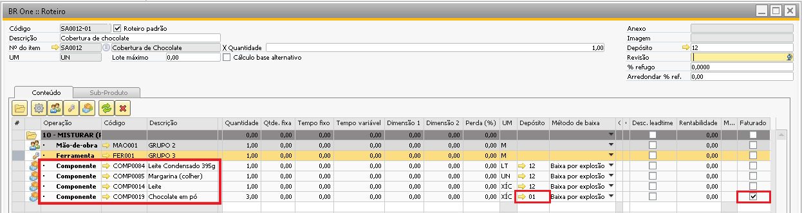{kind=link}
Como já explicado na documentação de roteiro, quando o depósito vinculado ao componente for um depósito próprio, significa que este componente não virá de um terceiro.
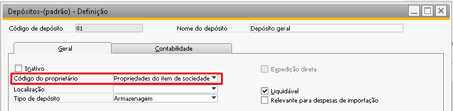{kind=link}
Já quando os componentes estiverem vinculados a depósito de terceiro, significa que estes componentes serão recebidos do cliente para que o beneficiamento seja realizado. Este recebimento dos componentes ocorrerá por meio da Nota Fiscal de Entrada com as utilizações Entrada industrialização encomenda ou Entrada industrialização triangular.
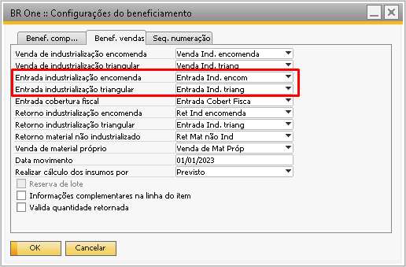{kind=link}
A diferença entre uma nota de industrialização por encomenda e uma nota de industrialização triangular é que na nota de industrialização por encomenda os componentes são recebidos do seu cliente (o mesmo que você vendeu o beneficiamento), já no caso da nota triangular você vende o beneficiamento para o seu cliente, mas não é ele quem envia os componentes e sim um terceiro. Acompanhe o exemplo a seguir.
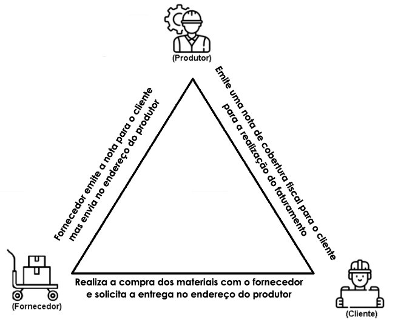{kind=link}
O processo de triangulação se faz necessário pois, ao invés do cliente comprar os componentes para o beneficiamento, receber eles no seu estoque e depois mandar para a empresa que vai fazer o beneficiamento, ele pode comprar os itens do fornecedor e pedir para que o fornecedor faça a entrega dos itens direto na empresa que fará o beneficiamento, isso diminuirá custos com transporte e tempo de entrega. O que vai entrar no depósito do cliente posteriormente será apenas o item já beneficiado.
Na nota fiscal de entrada com a utilização Entrada industrialização encomenda é necessário conter no cabeçalho o fornecedor vinculado ao cliente do pedido de vendas conforme a imagem abaixo:
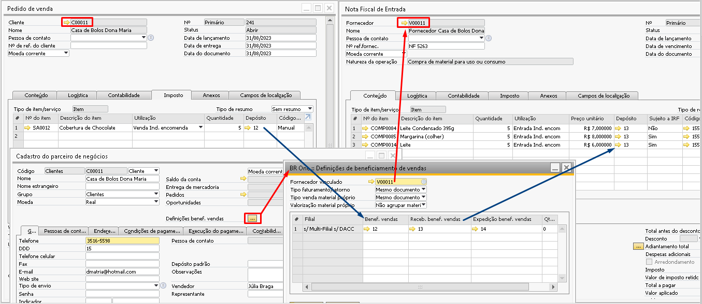{kind=link}
Quando a utilização da nota for Entrada industrialização encomenda também é preciso que o depósito seja o mesmo da configuração Receb. benef. Vendas. Mesmo que haja um depósito diferente, ao tentar adicionar a nota fiscal o sistema trocará o depósito automaticamente para o depósito configurado Receb. benef. Vendas configurado no cadastro do PN.
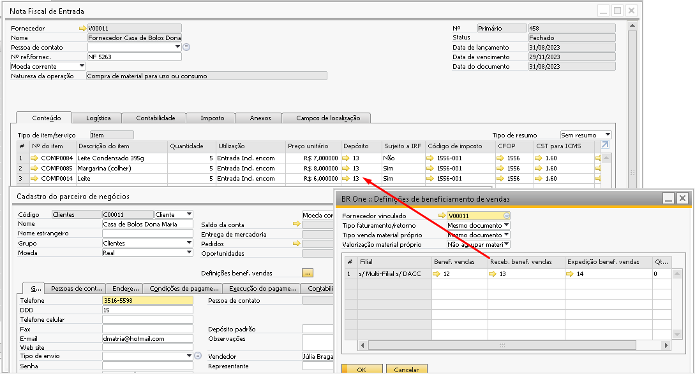{kind=link}
Ao entrar com os componentes que serão utilizados, o depósito Receb. benef. Vendas irá armazenar os itens de terceiros. O campo Depósito cliente das linhas dos itens também terá seu preenchimento automático.
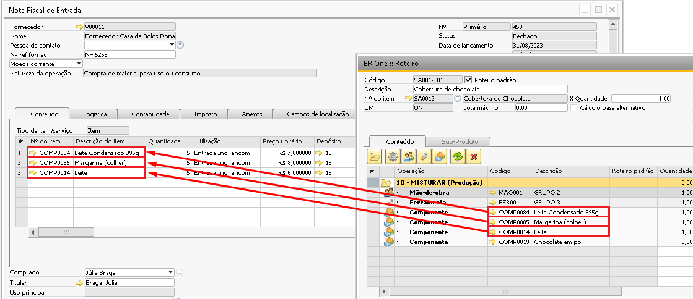{kind=link}
A nota fiscal de entrada onde a utilização for igual Entrada industrialização encomenda ou Entrada industrialização triangular em alguma linha, todas as linhas precisam estar com a mesma utilização, caso contrário o erro abaixo impedirá a adição da nota.
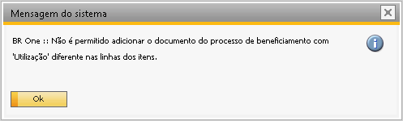 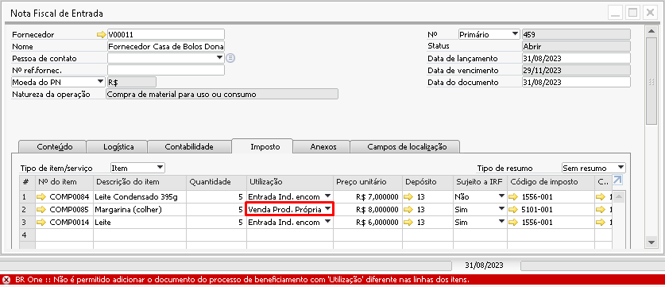{kind=link}
{kind=link}
BR One :: Não é permitido adicionar o documento do processo de beneficiamento com ‘Utilização’ diferente nas linhas dos itens.
Ao adicionar a nota fiscal de entrada, no rodapé do documento a tela Controle estoque terceiro estará disponível para acesso.
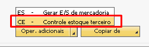{kind=link}
Controle estoque terceiro.
O botão Oper. Adicionais abrirará a tela de consulta de Controle de Estoque de Terceiro para cada nota fiscal de entrada, esta tela vai exibir o controle do saldo do material recebido do cliente no processo de Beneficiamento de Vendas, tanto no processo de industrialização por encomenda quanto no processo de industrialização triangular.
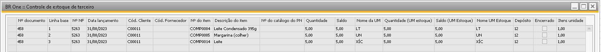{kind=link}
Quando o componente entra com uma unidade de medida diferente da unidade de medida de estoque, o saldo também é controlado em unidade. Note o exemplo abaixo, onde houve a entrada do componente Verniz, ele é comprado em caixa e cada caixa possui 24 unidades, logo ao comprar 2 caixas o sistema deve armazenar no depósito de terceiro um saldo de 48 unidades.
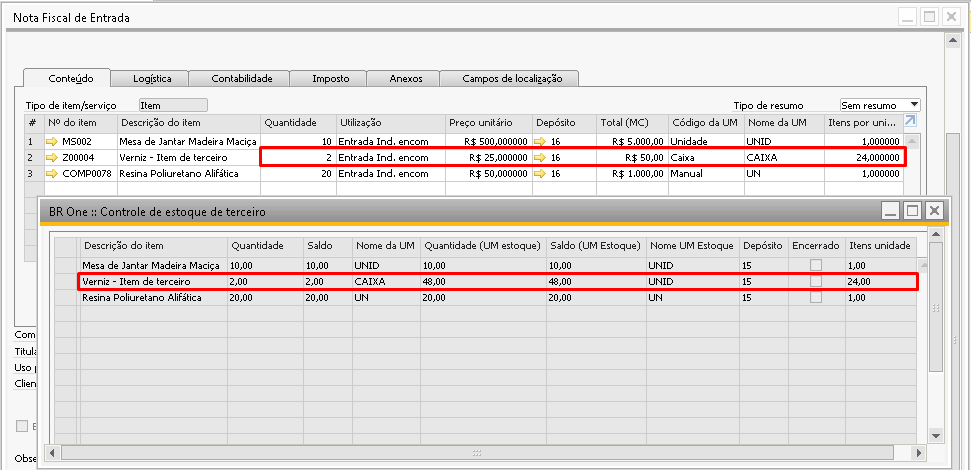{kind=link}
Atenção: Como detalhado na documentação de Parceiro de negócios, quando a empresa utiliza o processo de qualidade na entrada, isso é, gera ficha de análise para os componentes de terceiros, o depósito de Receb. benef. Vendas será diferente do depósito Benef. Vendas isso porque primeiro o componente entrará no depósito para inspeção (Receb. benef. Vendas) e somente após a ficha ser aprovada esta mercadoria será transferida para o depósito de Benef. Vendas e estará pronta para ser consumida na OP.
Caso a empresa não utilize o processo de qualidade o mesmo depósito deve ser definido para os depósitos de Benef. Vendas e Receb. benef. Vendas, sendo assim, logo que houver a entrada da nota fiscal com os componentes, eles já estarão no depósito correto para serem consumidos dentro da OP.
Processo de Triangulação:
O processo de triangulação possui esta denominação pois irá envolver mais um participante no processo de beneficiamento, que é o fornecedor dos componentes, segue abaixo um exemplo da participação deste terceiro participante no processo de remessa:
{kind=link}
Então diferente do processo de industrialização normal onde o cliente encomenda o beneficiamento do produtor e envia os componentes para a realização da industrialização, no processo de triangulação o cliente vai encomendar o beneficiamento do industrializador, porém quem fará o envio da matéria prima é o seu fornecedor.
O fornecedor da matéria prima faz a venda para o cliente como de costume, emite a nota fiscal faturando os componentes, mas nos casos de triangulação este fornecedor encaminhará os componentes ao endereço do industrializador e não no endereço do cliente.
Neste processo, o produtor vai emitir duas notas fiscais de entrada:
1º Nota Fiscal de Entrada com a utilização Entrada industrialização triangular onde o fornecedor no cabeçalho é a empresa que está enviando os componentes. Esta nota precisa ter o campo Cliente encomendante preenchido com o Cliente do beneficiamento, isso é necessário para o sistema identificar em qual depósito irá armazenar a mercadoria recebida. Este campo apresentará apenas clientes que estão com o Fornecedor Vinculado na tela de Parceiros de Negócios no campo Definição Benef. Vendas e deverá ser obrigatório caso exista uma linha com Utilização igual a Entrada de industrialização triangular.
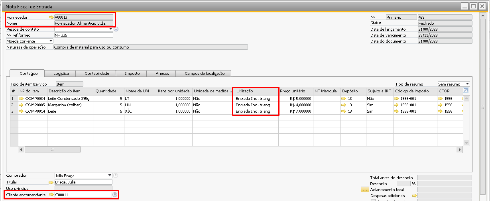{kind=link}
2º Nota Fiscal de Entrada com a utilização Entrada cobertura fiscal onde o fornecedor do cabeçalho é o fornecedor vinculado ao cadastro cliente do beneficiamento, esta nota irá conter os itens que o fornecedor mandou e a numeração da nota fiscal que entrou deste fornecedor no campo NF triangular. Para o preenchimento do campo NF triangular é necessário dar um tab e escolher a nota, será listado todas as notas fiscais de entrada com a utilização Entrada industrialização triangular.
Este campo deverá ser preenchido apenas para as notas com utilização Entrada cobertura fiscal. É possível utilizar a nota de cobertura para cobrir fiscalmente mais de uma nota fiscal, para isso é necessário informar os itens nas linhas e as numerações de notas.
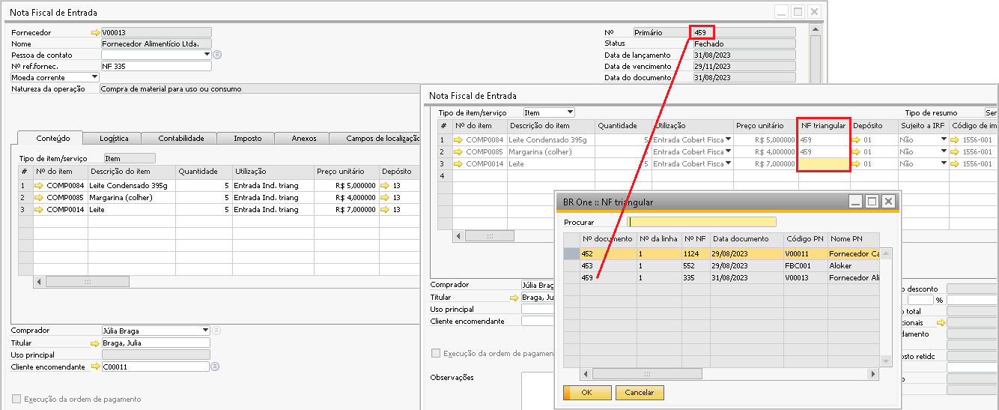 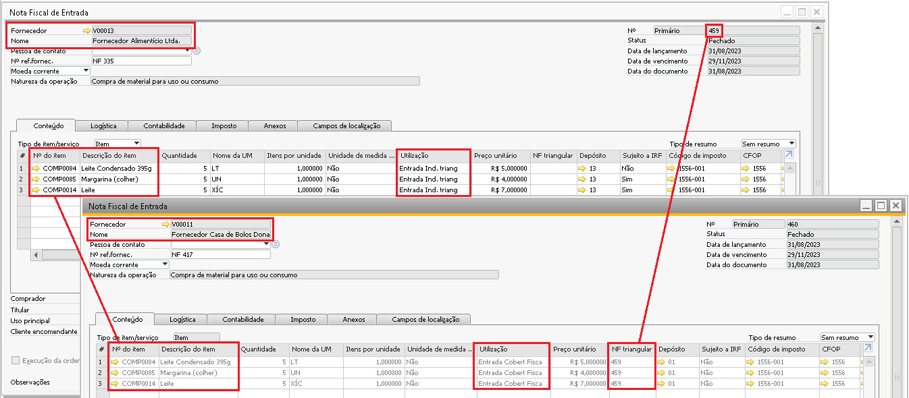{kind=link}
{kind=link}
NF Cobertura Fiscal: Assim que a nota de cobertura fiscal for adicionada, ao voltar na nota do fornecedor (com a utilização entrada industrialização triangular) que agora está coberta fiscalmente é possível consultar a nota de cobertura pela opção abaixo:
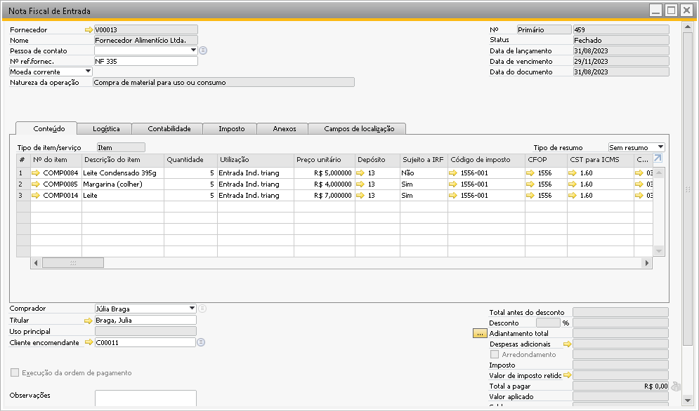 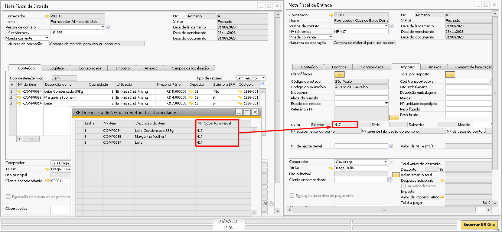{kind=link}
{kind=link}
Para as notas que são cobertura fiscal a tela de Controle de estoque de terceiros não fará o controle dos saldos pois como o parâmetro só imposto está selecionado, nenhuma movimentação de estoque é realizada, portanto não há saldo a ser controlado. Caso tente abrir a tela a mensagem abaixo será exibida:
{kind=link}
BR One :: Não é permitido abrir a operação adicional de ‘Controle estoque terceiro’ para este tipo de documento.
No caso do processo de triangulação o controle dos saldos fica sendo realizado na nota fiscal com a utilização Entrada industrialização triangular, acessando o botão Oper. Adicionais > Controle estoque terceiro.
Depósito do Cliente: Este campo será preenchido automaticamente pelo processo com o Depósito definido no novo campo ‘Benef. Vendas’ da tabela vinculada ao Cadastro do Parceiro de Negócio.
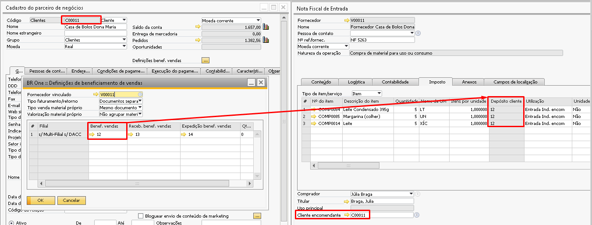{kind=link}
NF de ajuste de Beneficiamento: Este campo será informado manualmente pelo usuário quando necessário realizar Nota Fiscal Entrada ou Dev. Nota Fiscal de Saída própria em cenário onde não se possa mais cancelar os documentos gerados pelo processo de Assistente de Faturamento e Retorno.
O campo apresentará as notas fiscais de Dev.de Nota Fiscal de Entrada e Nota Fiscal de Saída com utilização igual a Retorno industrialização encomenda e Retorno industrialização triangular que não esteja cancelada, não seja uma nota de cancelamento e que não esteja vinculado a outra NF Entrada e Dev. Nota Fiscal de Saída.
Segue explicação do processo da NF de ajuste abaixo:
A nota fiscal de ajuste pode ser necessária em casos onde os componentes utilizados no processo de beneficiamento já foram retornados para o cliente por meio de uma Dev. Nota Fiscal de Entrada ou uma Nota Fiscal de Saída, estes documentos já foram transmitidos para a SEFAZ a mais de 24 horas e por algum motivo é necessário o cancelamento dos mesmos. Como o tempo para o cancelamento das notas já foi atingido e você irá precisar que os saldos retornem para o sistema é possível criar uma Nota Fiscal de Ajuste.
Para criar uma Nota Fiscal de Ajuste, é necessário abrir a tela de Nota Fiscal de Entrada ou Dev. Nota Fiscal de Saída, preencher os mesmos componentes da Nota Fiscal de Saída ou Dev. Nota Fiscal de Entrada, as mesmas quantidades, o mesmo depósito (Expedição) e a mesma utilização do documento que será ajustado (retorno industrialização encomenda ou retorno industrialização triangular).
No nosso exemplo abaixo, vamos utilizar a Nota Fiscal de Entrada, mas o processo pode ser realizado em uma Dev. Nota Fiscal de Saída.
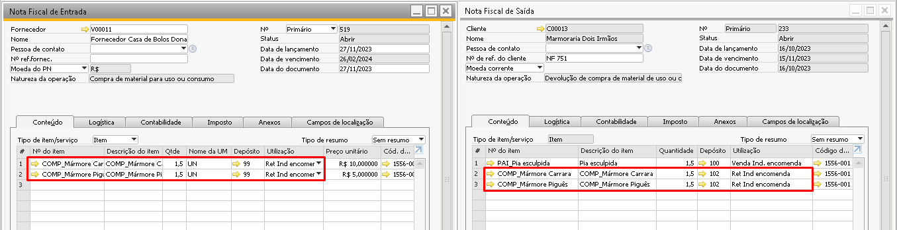{kind=link}
Após a criação da Nota Fiscal de Entrada ou Dev. Nota Fiscal de Saída (Nota de ajuste) na aba Imposto é necessário selecionar no campo “NF de ajuste de Benef.” a Nota Fiscal de Saída ou Dev. Nota Fiscal de Entrada que será ajustada (saldo retornado para o sistema). Aparecerão todas as Notas Fiscais de Saída ou Dev. Nota Fiscal de Entrada que não estejam canceladas, vinculadas em outras NF.
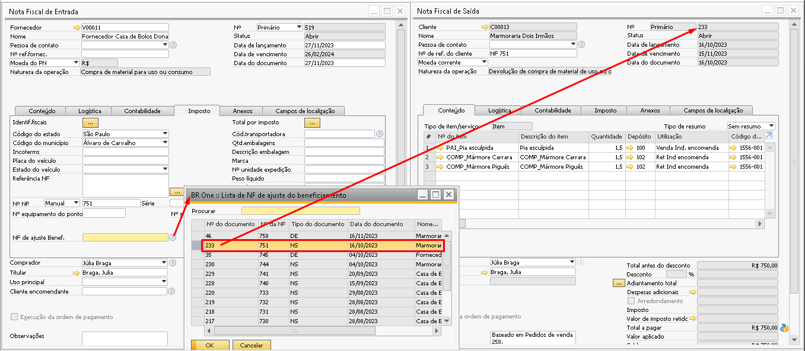{kind=link}
Após a adição da NF de ajuste, o saldo será retornado o sistema, ele poderá ser visualizado na tela de Controle de estoque de terceiro da Nota Fiscal de Entrada original (que entrou com os componentes pela primeira vez) e na etapa 2 do assistente de faturamento e retorno na opção Movimento, essa quantidade estará novamente disponível para que seja retornado ao cliente.
Caso o documento de NF Saída ou Dev. NFe for cancelado e o mesmo estiver vinculado a uma NFe, o campo será atualizado automaticamente.
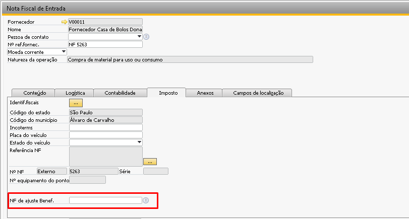{kind=link}
Caso a Nota Fiscal de Entrada seja duplicada, os campos abaixo não serão copiados para uma nova Nota Fiscal de Entrada:
Cliente encomendante
Documento ajuste Benef. Vendas
Depósito cliente
NF Triangular
Chave documento base
Linha documento base
Tipo documento base
Validações para as utilizações de NF de Entrada
NF de Entrada Encomenda
Todas as linhas devem possuir a mesma Utilização.
NF de Entrada Triangular
Todas as linhas devem possuir a mesma Utilização;
É obrigatório preencher o campo Cliente encomendante.
NF de Entrada Cobertura Fiscal
Todas as linhas devem possuir a mesma Utilização;
Quando a utilização for Entrada Cobertura Fiscal, o campo NF Triangular é obrigatório em todas as linhas.
NF de Entrada Ajuste
Pode ser um documento de Devolução de NF de Entrada ou uma Nota Fiscal de Saída;
A quantidade de linhas de itens, código dos itens e quantidade dos itens devem ser iguais aos da NF de Entrada;
A utilização das linhas deverão ser do tipo Retorno industrialização encomenda ou Retorno industrialização triangular.